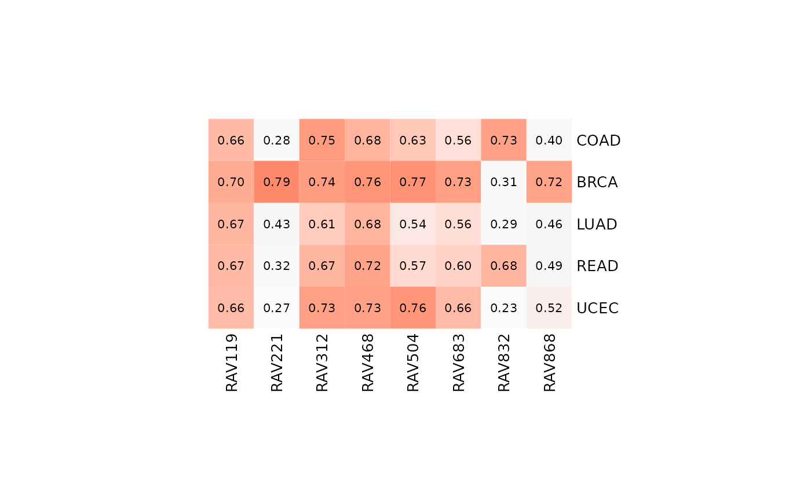
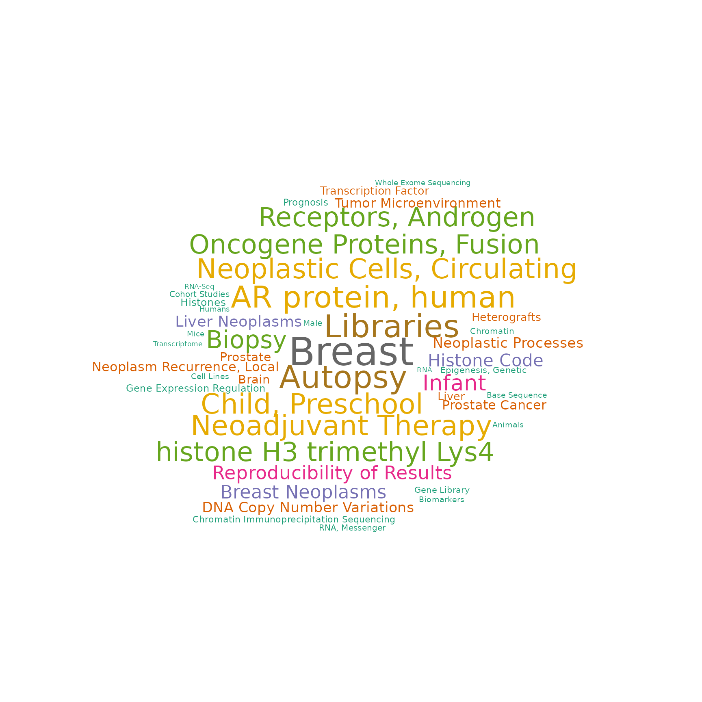
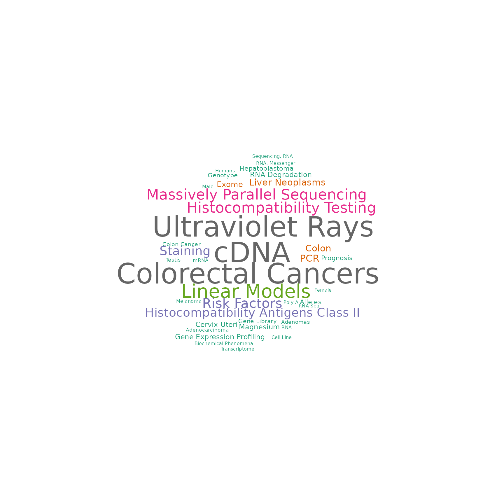
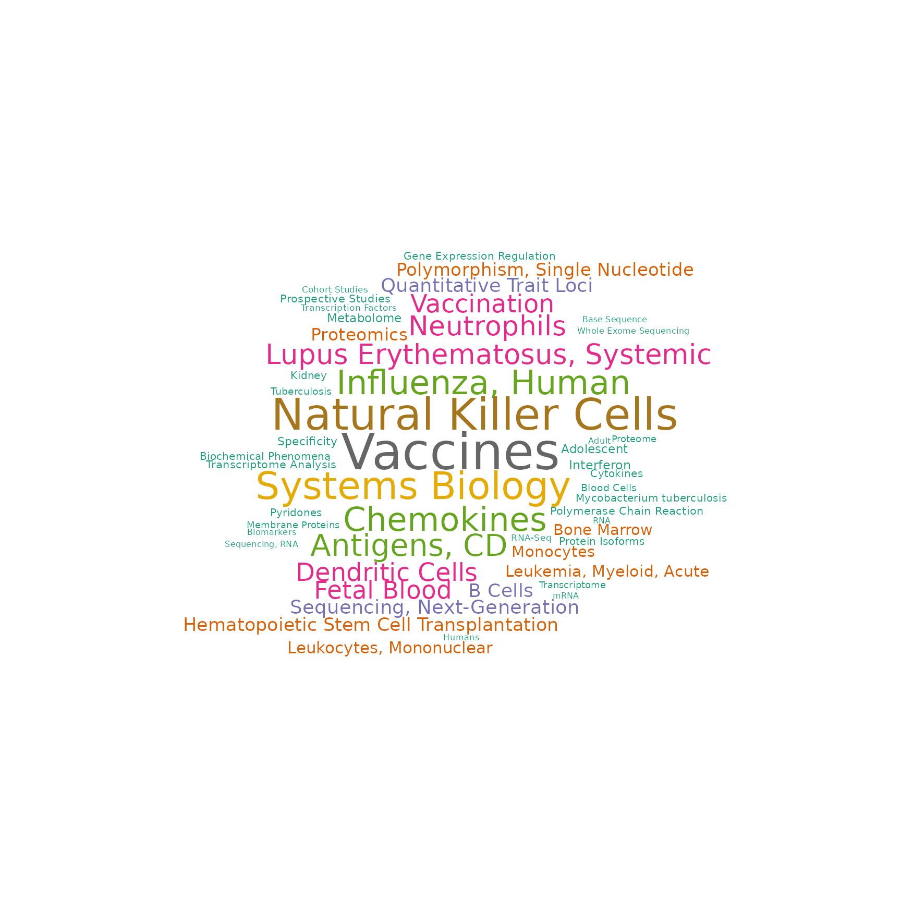
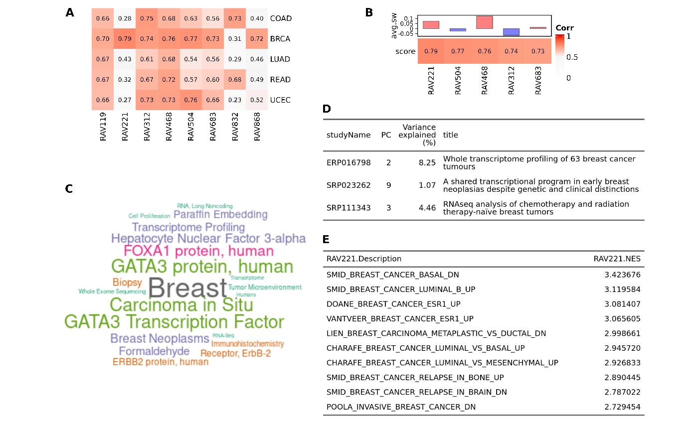

Analyze TCGA datasets using RAVmodel
Sehyun Oh
2021-06-09
Source:vignettes/TCGA/TCGA_5studies.Rmd
TCGA_5studies.RmdSetup
TCGA datasets
TCGA_validationDatasets is a list containing 6 TCGA datasets: COAD, BRCA, LUAD, READ, UCEC, and OV. First 5 are raw read counts from GSEABenchmarkeR package with log2(count + 1) transformation. Also, GSEABenchmarkeR::loadEData excluded genes with cpm < 2 in more than half of the samples. TCGA-OV dataset is from curatedOvarianData package. This training dataset file was built using Results/TCGA/R/build_TCGA_validationDatasets.R script.
RAVmodel
We use RAVmodel built from 536 studies and annotated with MSigDB C2 gene sets.
RAVmodel <- getModel("C2", load=TRUE)
RAVmodel
## class: PCAGenomicSignatures
## dim: 13934 4764
## metadata(7): cluster size ... updateNote version
## assays(1): RAVindex
## rownames(13934): CASKIN1 DDX3Y ... CTC-457E21.9 AC007966.1
## rowData names(0):
## colnames(4764): RAV1 RAV2 ... RAV4763 RAV4764
## colData names(4): RAV studies silhouetteWidth gsea
## trainingData(2): PCAsummary MeSH
## trainingData names(536): DRP000987 SRP059172 ... SRP164913 SRP188526
updateNote(RAVmodel)
## [1] "536 refine.bio studies/ top 90% varying genes/ GSEA with MSigDB C2"Comparision Ver.1 (only TCGA)
heatmapTable (all)
Here, we plot the heatmapTable of validation result from multiple studies. By matching this result with metadata, you can identify RAVs that are more strongly associated with specific features. It seems like RAV221 and RAV868 are specific to BRCA while RAV832 is strongly associated with colon/rectal cancers.
## This process takes little time due to the size of datasets.
val_all <- validate(datasets, RAVmodel)
heatmapTable(val_all) 
heatmapTable (one dataset)
If you provide validation result from one dataset, heatmapTable include the average silhouette width as a reference.


BRCA
RAV221 shows the highest validation score with a positive avgerage silhouette width.
val_brca <- validate(datasets[["BRCA"]], RAVmodel)
heatmapTable(val_brca)
RAV868 didn’t score top 5, so we checked a couple more top validated RAVs. RAV868 is ranked 6th based on the score with negative average silhouette width.
heatmapTable(val_brca, num.out = 7) 
MeSH terms and associated studies
BRCA-associated
RAV221 and RAV868 are specific to BRCA.
RAV221
RAV221 consists of three breast cancer studies (ERP016798, SRP023262, and SRP11343) and top 10 enriched pathways are associated with breast cancer.
ind <- 221
findStudiesInCluster(RAVmodel, ind)
## [1] "ERP016798" "SRP023262" "SRP111343"
subsetEnrichedPathways(RAVmodel, ind) %>% as.data.frame
## RAV221
## Up_1 SMID_BREAST_CANCER_BASAL_DN
## Up_2 DOANE_BREAST_CANCER_ESR1_UP
## Up_3 SMID_BREAST_CANCER_LUMINAL_B_UP
## Up_4 VANTVEER_BREAST_CANCER_ESR1_UP
## Up_5 LIEN_BREAST_CARCINOMA_METAPLASTIC_VS_DUCTAL_DN
## Up_6 CHARAFE_BREAST_CANCER_LUMINAL_VS_BASAL_UP
## Up_7 CHARAFE_BREAST_CANCER_LUMINAL_VS_MESENCHYMAL_UP
## Up_8 SMID_BREAST_CANCER_RELAPSE_IN_BONE_UP
## Up_9 SMID_BREAST_CANCER_RELAPSE_IN_BRAIN_DN
## Up_10 POOLA_INVASIVE_BREAST_CANCER_DN
drawWordcloud(RAVmodel, ind)
## Warning in wordcloud::wordcloud(words = all$word, freq = all$freq, scale =
## scale, : GATA3 Transcription Factor could not be fit on page. It will not be
## plotted.
RAV868
ind <- 868
findStudiesInCluster(RAVmodel, ind)
## [1] "SRP014428" "SRP111343" "SRP158730" "SRP163173" "SRP169094"
subsetEnrichedPathways(RAVmodel, ind) %>% as.data.frame
## RAV868
## Up_1 CHARAFE_BREAST_CANCER_LUMINAL_VS_MESENCHYMAL_UP
## Up_2 LIEN_BREAST_CARCINOMA_METAPLASTIC_VS_DUCTAL_DN
## Up_3 DOANE_BREAST_CANCER_ESR1_UP
## Up_4 CHARAFE_BREAST_CANCER_LUMINAL_VS_BASAL_UP
## Up_5 ROSTY_CERVICAL_CANCER_PROLIFERATION_CLUSTER
## Up_6 LIM_MAMMARY_STEM_CELL_DN
## Up_7 COLDREN_GEFITINIB_RESISTANCE_DN
## Up_8 DOANE_BREAST_CANCER_CLASSES_UP
## Up_9 SOTIRIOU_BREAST_CANCER_GRADE_1_VS_3_UP
## Up_10 VANTVEER_BREAST_CANCER_ESR1_UP
drawWordcloud(RAVmodel, ind)
COAD/READ-associated
RAV832
ind <- 832
findStudiesInCluster(RAVmodel, ind)
## [1] "SRP010181" "SRP029880" "SRP068591" "SRP073267" "SRP123604"
subsetEnrichedPathways(RAVmodel, ind) %>% as.data.frame
## RAV832
## Up_1 SABATES_COLORECTAL_ADENOMA_UP
## Up_2 HSIAO_LIVER_SPECIFIC_GENES
## Up_3 GRADE_COLON_AND_RECTAL_CANCER_UP
## Up_4 REACTOME_EUKARYOTIC_TRANSLATION_ELONGATION
## Up_5 REACTOME_SRP_DEPENDENT_COTRANSLATIONAL_PROTEIN_TARGETING_TO_MEMBRANE
## Up_6 KEGG_RIBOSOME
## Up_7 LEE_LIVER_CANCER_ACOX1_DN
## Up_8 REACTOME_SELENOAMINO_ACID_METABOLISM
## Up_9 KOBAYASHI_EGFR_SIGNALING_24HR_DN
## Up_10 REACTOME_REGULATION_OF_EXPRESSION_OF_SLITS_AND_ROBOS
drawWordcloud(RAVmodel, ind)
## Warning in wordcloud::wordcloud(words = all$word, freq = all$freq, scale =
## scale, : Colorectal Cancers could not be fit on page. It will not be plotted.
Comparision Ver.2 (TCGA + others)
heatmapTable (all)
Here, we added SLE-WB microarray dataset and 4 colon cancer microarray datasets to 5 TCGA dataset and scoreCutoff is set to 0.68 instead of the default 0.7.
names(new_datasets)
## [1] "COAD" "BRCA" "LUAD" "READ" "UCEC" "SLE"
## [7] "GSE14095" "GSE17536" "GSE2109" "GSE39582"
Based on this multi-datasets validation table,
- RAV23 and RAV1551 are SLE-specific
- RAV188 seems to be COAD-specific, different from RAV832 which is associated with both COAD and READ
MeSH terms and associated studies
SLE-associated
RAV23
ind <- 23
findStudiesInCluster(RAVmodel, ind)
## [1] "DRP001953" "ERP114104" "SRP051848" "SRP059039" "SRP089814" "SRP110609"
## [7] "SRP118733" "SRP132018" "SRP136057" "SRP136108" "SRP150419" "SRP150595"
subsetEnrichedPathways(RAVmodel, ind) %>% as.data.frame
## RAV23
## Up_1 KEGG_RIBOSOME
## Up_2 REACTOME_SRP_DEPENDENT_COTRANSLATIONAL_PROTEIN_TARGETING_TO_MEMBRANE
## Up_3 REACTOME_EUKARYOTIC_TRANSLATION_ELONGATION
## Up_4 REACTOME_SELENOAMINO_ACID_METABOLISM
## Up_5 REACTOME_RRNA_PROCESSING
## Up_6 REACTOME_TRANSLATION
## Up_7 MANALO_HYPOXIA_DN
## Up_8 CAIRO_HEPATOBLASTOMA_CLASSES_UP
## Up_9 PUJANA_BRCA2_PCC_NETWORK
## Up_10 WONG_EMBRYONIC_STEM_CELL_CORE
drawWordcloud(RAVmodel, ind)
## Warning in wordcloud::wordcloud(words = all$word, freq = all$freq, scale
## = scale, : Kidney Transplantation could not be fit on page. It will not be
## plotted.
## Warning in wordcloud::wordcloud(words = all$word, freq = all$freq, scale =
## scale, : Inflammatory Bowel Disease could not be fit on page. It will not be
## plotted.
## Warning in wordcloud::wordcloud(words = all$word, freq = all$freq, scale =
## scale, : Hematopoietic Stem Cell Transplantation could not be fit on page. It
## will not be plotted.
## Warning in wordcloud::wordcloud(words = all$word, freq = all$freq, scale
## = scale, : Innate Immune Response could not be fit on page. It will not be
## plotted.
RAV1551
ind <- 1551
findStudiesInCluster(RAVmodel, ind)
## [1] "SRP051688" "SRP056840" "SRP062966" "SRP071965" "SRP105369" "SRP131037"
## [7] "SRP150595" "SRP150872"
subsetEnrichedPathways(RAVmodel, ind) %>% as.data.frame
## RAV1551
## Up_1 REACTOME_NEUTROPHIL_DEGRANULATION
## Up_2 THEILGAARD_NEUTROPHIL_AT_SKIN_WOUND_DN
## Up_3 ALTEMEIER_RESPONSE_TO_LPS_WITH_MECHANICAL_VENTILATION
## Up_4 VERHAAK_AML_WITH_NPM1_MUTATED_UP
## Up_5 VERHAAK_GLIOBLASTOMA_MESENCHYMAL
## Up_6 HAHTOLA_MYCOSIS_FUNGOIDES_CD4_UP
## Up_7 BROWN_MYELOID_CELL_DEVELOPMENT_UP
## Up_8 TAKEDA_TARGETS_OF_NUP98_HOXA9_FUSION_8D_DN
## Up_9 LENAOUR_DENDRITIC_CELL_MATURATION_DN
## Up_10 SMIRNOV_CIRCULATING_ENDOTHELIOCYTES_IN_CANCER_UP
drawWordcloud(RAVmodel, ind)
## Warning in wordcloud::wordcloud(words = all$word, freq = all$freq, scale =
## scale, : Lupus Erythematosus, Systemic could not be fit on page. It will not be
## plotted.
COAD-specific
ind <- 188
findStudiesInCluster(RAVmodel, ind)
## [1] "ERP013206" "ERP023272" "ERP023550" "SRP029880" "SRP077046" "SRP149847"
subsetEnrichedPathways(RAVmodel, ind, both=TRUE) %>% as.data.frame
## RAV188
## Up_1 SCHUETZ_BREAST_CANCER_DUCTAL_INVASIVE_UP
## Up_2 VECCHI_GASTRIC_CANCER_ADVANCED_VS_EARLY_UP
## Up_3 LIM_MAMMARY_STEM_CELL_UP
## Up_4 ANASTASSIOU_MULTICANCER_INVASIVENESS_SIGNATURE
## Up_5 BOQUEST_STEM_CELL_UP
## Up_6 CHARAFE_BREAST_CANCER_LUMINAL_VS_MESENCHYMAL_DN
## Up_7 LINDGREN_BLADDER_CANCER_CLUSTER_2B
## Up_8 PICCALUGA_ANGIOIMMUNOBLASTIC_LYMPHOMA_UP
## Up_9 TURASHVILI_BREAST_LOBULAR_CARCINOMA_VS_DUCTAL_NORMAL_UP
## Up_10 SMID_BREAST_CANCER_NORMAL_LIKE_UP
## Down_1 WAMUNYOKOLI_OVARIAN_CANCER_LMP_UP
## Down_2 HOLLERN_EMT_BREAST_TUMOR_DN
## Down_3 CHARAFE_BREAST_CANCER_LUMINAL_VS_MESENCHYMAL_UP
## Down_4 LIM_MAMMARY_STEM_CELL_DN
## Down_5 VECCHI_GASTRIC_CANCER_ADVANCED_VS_EARLY_DN
## Down_6 COLDREN_GEFITINIB_RESISTANCE_DN
## Down_7 WOO_LIVER_CANCER_RECURRENCE_DN
## Down_8 REACTOME_RESPIRATORY_ELECTRON_TRANSPORT_ATP_SYNTHESIS_BY_CHEMIOSMOTIC_COUPLING_AND_HEAT_PRODUCTION_BY_UNCOUPLING_PROTEINS
## Down_9 REACTOME_RESPIRATORY_ELECTRON_TRANSPORT
## Down_10 WAMUNYOKOLI_OVARIAN_CANCER_GRADES_1_2_UP
drawWordcloud(RAVmodel, ind)
## Warning in wordcloud::wordcloud(words = all$word, freq = all$freq, scale =
## scale, : Transplantation, Autologous could not be fit on page. It will not be
## plotted.
## Warning in wordcloud::wordcloud(words = all$word, freq = all$freq, scale =
## scale, : Inflammatory Bowel Disease could not be fit on page. It will not be
## plotted.
Manuscript Figures
Fig 2. Connect new data with the existing databases
A RAVmodel provides a rich resource for understanding new or user-supplied datasets in the context of all other RAVmodel datasets. A) Validation of multiple datasets. Each dataset was subjected to PCA and correlated to all possible RAVs using Pearson correlation. RAVs with correlation above 0.7 in at least one dataset were included. RAV221 and RAV868 seem to be associated with breast cancer while RAV832 is associated with colon and rectal cancer. B) Validation of a single dataset, TCGA-BRCA. Top 5 validated RAVs (score, bottom panel) and their average silhouette width (avg.sw, top panel) are shown. C) MeSH terms associated with RAV221 can aid in interpreting the biological context of the RAV when plotted as a word cloud. D) Studies contributing to RAV221. Study accession number (studyName column) and the title of a study (title column) are shown here. E) Top 10 enriched pathways in RAV221.

Sup.Fig 4. Colon and rectal cancer associated RAV
Based on Figure 2A, RAV832 seems to be associated with TCGA-COAD and TCGA-READ. Top validation results of A) TCGA-COAD and B) TCGA-READ include RAV832 with the negative average silhouette width. C) MeSH terms associated with RAV832. D) Studies contributing to RAV832. E) MSigDB C2 gene sets enriched in RAV832.

Session Info
r sessionInfo() ## R version 4.1.0 (2021-05-18) ## Platform: x86_64-pc-linux-gnu (64-bit) ## Running under: Ubuntu 18.04.5 LTS ## ## Matrix products: default ## BLAS: /usr/lib/x86_64-linux-gnu/openblas/libblas.so.3 ## LAPACK: /usr/lib/x86_64-linux-gnu/libopenblasp-r0.2.20.so ## ## locale: ## [1] LC_CTYPE=en_US.UTF-8 LC_NUMERIC=C ## [3] LC_TIME=en_US.UTF-8 LC_COLLATE=en_US.UTF-8 ## [5] LC_MONETARY=en_US.UTF-8 LC_MESSAGES=en_US.UTF-8 ## [7] LC_PAPER=en_US.UTF-8 LC_NAME=C ## [9] LC_ADDRESS=C LC_TELEPHONE=C ## [11] LC_MEASUREMENT=en_US.UTF-8 LC_IDENTIFICATION=C ## ## attached base packages: ## [1] parallel stats4 stats graphics grDevices utils datasets ## [8] methods base ## ## other attached packages: ## [1] EBImage_4.34.0 ggplot2_3.3.3 ## [3] dplyr_1.0.6 GenomicSuperSignature_1.1.3 ## [5] SummarizedExperiment_1.22.0 Biobase_2.52.0 ## [7] GenomicRanges_1.44.0 GenomeInfoDb_1.28.0 ## [9] IRanges_2.26.0 S4Vectors_0.30.0 ## [11] BiocGenerics_0.38.0 MatrixGenerics_1.4.0 ## [13] matrixStats_0.59.0 BiocStyle_2.20.0 ## ## loaded via a namespace (and not attached): ## [1] colorspace_2.0-1 ggsignif_0.6.1 rjson_0.2.20 ## [4] ellipsis_0.3.2 rio_0.5.26 rprojroot_2.0.2 ## [7] circlize_0.4.12 XVector_0.32.0 fftwtools_0.9-11 ## [10] GlobalOptions_0.1.2 fs_1.5.0 rstudioapi_0.13 ## [13] clue_0.3-59 ggpubr_0.4.0 bit64_4.0.5 ## [16] fansi_0.5.0 codetools_0.2-18 doParallel_1.0.16 ## [19] cachem_1.0.5 knitr_1.33 jsonlite_1.7.2 ## [22] Cairo_1.5-12.2 broom_0.7.6 cluster_2.1.2 ## [25] dbplyr_2.1.1 png_0.1-7 readr_1.4.0 ## [28] BiocManager_1.30.15 compiler_4.1.0 httr_1.4.2 ## [31] backports_1.2.1 assertthat_0.2.1 Matrix_1.3-4 ## [34] fastmap_1.1.0 cli_2.5.0 htmltools_0.5.1.1 ## [37] tools_4.1.0 gtable_0.3.0 glue_1.4.2 ## [40] GenomeInfoDbData_1.2.6 rappdirs_0.3.3 Rcpp_1.0.6 ## [43] carData_3.0-4 cellranger_1.1.0 jquerylib_0.1.4 ## [46] pkgdown_1.6.1 vctrs_0.3.8 iterators_1.0.13 ## [49] xfun_0.23 stringr_1.4.0 openxlsx_4.2.3 ## [52] lifecycle_1.0.0 rstatix_0.7.0 zlibbioc_1.38.0 ## [55] scales_1.1.1 ragg_1.1.2 hms_1.1.0 ## [58] RColorBrewer_1.1-2 ComplexHeatmap_2.8.0 yaml_2.2.1 ## [61] curl_4.3.1 memoise_2.0.0 sass_0.4.0 ## [64] stringi_1.6.2 RSQLite_2.2.7 highr_0.9 ## [67] desc_1.3.0 foreach_1.5.1 tiff_0.1-8 ## [70] filelock_1.0.2 zip_2.2.0 shape_1.4.6 ## [73] rlang_0.4.11 pkgconfig_2.0.3 systemfonts_1.0.2 ## [76] bitops_1.0-7 evaluate_0.14 lattice_0.20-44 ## [79] purrr_0.3.4 htmlwidgets_1.5.3 bit_4.0.4 ## [82] tidyselect_1.1.1 magrittr_2.0.1 bookdown_0.22 ## [85] R6_2.5.0 magick_2.7.2 generics_0.1.0 ## [88] DelayedArray_0.18.0 DBI_1.1.1 withr_2.4.2 ## [91] pillar_1.6.1 haven_2.4.1 foreign_0.8-81 ## [94] abind_1.4-5 RCurl_1.98-1.3 tibble_3.1.2 ## [97] crayon_1.4.1 car_3.0-10 wordcloud_2.6 ## [100] utf8_1.2.1 BiocFileCache_2.0.0 rmarkdown_2.8 ## [103] jpeg_0.1-8.1 GetoptLong_1.0.5 locfit_1.5-9.4 ## [106] grid_4.1.0 readxl_1.3.1 data.table_1.14.0 ## [109] blob_1.2.1 forcats_0.5.1 digest_0.6.27 ## [112] tidyr_1.1.3 textshaping_0.3.4 munsell_0.5.0 ## [115] bslib_0.2.5.1